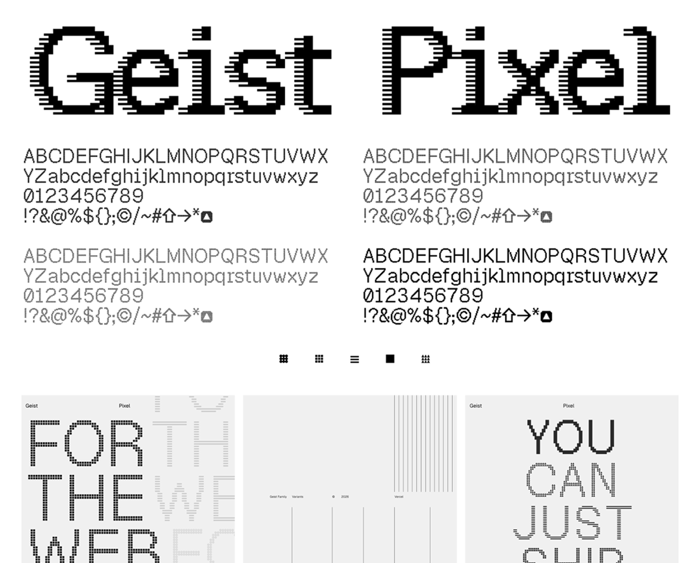

Geist Pixel is a pixel typeface designed to complement the Geist font family, built on the same principles of minimalism, precision, and simplicity that define the [Vercel](https://vercel.com/design) universe. Conceived as a display font, it pays homage to the pixel font genre while expressing the brand’s future-forward, visionary spirit, and is available in five stylistic variants for a wide range of applications.
To contribute, see github.com/vercel/geist-pixel-font.
